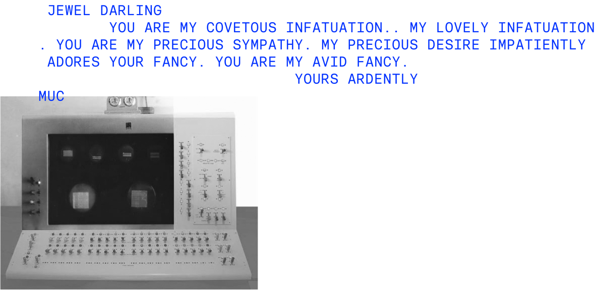

GenerAiting the Future
sowie Gedanken zu Möglichkeiten und Grenzen von KI im HR-Umfeld
Neu-Ulm University of Applied Sciences
Donnerstag, 14. November 2024
Künstliche
Intelligenz
Der Anfang vom Ende oder der Weg in ein Utopia?


Apropos Love …

Definition
Ein KI-System ist ein maschinengestütztes System, das so konzipiert ist, dass es mit unterschiedlichem Grad an Autonomie betrieben werden kann, das nach der Einführung Anpassungsfähigkeit zeigen kann und das für explizite oder implizite Ziele aus den Eingaben, die es erhält, ableitet wie es Ergebnisse wie Vorhersagen, Inhalte, Empfehlungen oder Entscheidungen erzeugen kann, die physische oder virtuelle Umgebungen beeinflussen können (European Commission, 2024).
Systeme, die ähnlich autonom wie wir wahrnehmen, lernen, denken und handeln.
Ebenen der KI
Fähigkeiten Generativer KI
Erstellt mit udio
Source: SWR
Erstellt mit einem speziell trainierten FLUX model
Source: OpenAI Sora1
Vom Wort zur Tat
KI-Agenten kombinieren unterschiedliche Fähigkeiten und ermöglichen so nahezu unbegrenzte Anwendungsmöglichkeiten.
Auswirkungen auf die Wirtschaft
KI hat das Potenzial auf unterschiedlichen Ebenen zu verändern.
Produktivität1
Kreativität und Innovation
Produkte und Dienstleistungen
Arbeitsmarkt
Singla & Chui (2024)
Ai — in particular generative Ai — is the electricity of our era, increasingly ubiquitous and spawning countless complementary innovations. Erik Brynjolfsson, Professor am Stanford Institute for Human-Centered AI
For many jobs, Ai will only automate or augment 20-30% of tasks. So, there’s a huge productivity boost, but people are still required for the remaining 70% of the role. Andrew Ng, chinesisch-US-amerikanischer Informatiker, KI Experte
Auswirkungen auf HR
Doppelt
gefordert
Sie müssen einerseits die Transformationsprozesse in Ihrer Kammer unterstützen
und gleichzeitig sich selbst neu erfinden.
HR gestaltet die KI-Transformation
Um ihre volle Wirkung zu entfalten, erfordert die KI noch stärker als andere digitale Technologien erhebliche Veränderungen in vielen Unternehmen. Insbesondere in Bezug auf die
Kultur, Organisation und Qualifikation der Arbeitskräfte.
HR kann und sollte eine Vorreiterrolle bei der KI-Transformation im Unternehmen einnehmen, Mitarbeiter unterstützen, die Akzeptanz von KI fördern und den Wandel verantwortlich und erfolgreich gestalten (
"verantwortliches Normalisieren").
KI transformiert HR
KI wird HR in vielen Bereichen grundlegend verändern, viele Leistungen werden individualisierter und HR-Profis gewinnen Zeit für strategische Aufgaben.
KI verändert insbesondere …
Routineaufgaben
Entscheidungsfindung
Rekrutierung
Personalentwicklung
Source: paraox.ai
Source: Personio
Source: growify
Die JobTeaser (2024) Studie zeigt, dass die Candidate Experience entscheidend ist — Transparenz, Schnelligkeit und klare Kommunikation sind die wichtigsten Faktoren.
Herausforderungen
Der Einsatz von KI im HR-Bereich bietet viele Chancen,
birgt aber auch einige Herausforderungen. Insbesondere hinsichtlich …
Regulierung
Datenqualität
Transparenz
Akzeptanz
Komplexität
Mein KI-Imperativ
Intelligent agent-driven automation remains an exciting proposition, with the potential to revolutionize whole industries, bringing a new speed of action to work. Singla & Chui (2024), McKinsey Quarterly Report #4 (2024)
Diejenigen, die mit Hilfe von KI ihr eigenes Potenzial steigern, werden denjenigen überlegen sein, die das nicht tun.
Empfehlungen
Beschäftigen Sie sich mit der Technologie, definieren Sie Ziele und Leitlinien, identifizieren Sie Use-Cases, analysieren Sie Ihre Kompetenz- und Kultur-Lücke und entwickeln Sie Ihre Organisation.
Schlusswort
KI hat das Potenzial,
[die Welt] erheblich zu verbessern.
Unternehmen, die diese Potenziale realisieren, setzen auf transparente Kommunikation, Innovationsgeist und Mitarbeiterbefähigung, investieren in die technologische Infrastruktur und übernehmen Verantwortung für die Auswirkungen der Technologie.
Vielen Dank
für Ihre Aufmerksamkeit
Andy Weeger (andy.weeger@hnu.de)
Literatur
Appendix
Ai Use Cases
Ai Use Case Prism
Online-Resourcen
Folgende kostenlose Ressourcen können wir empfehlen, um mehr über künstliche Intelligenz inklusive Prompting zu lernen:
Eigenschaften von KI-Agenten
| Typische GenAI Werkzeuge | KI Agenten | |
|---|---|---|
| Umfang des Anwendungsfalls | Automatisierung von Aufgaben (jede Aufgabe erfordert in der Regel menschliche Eingaben) | Können Aufgaben ausführen, die für einzelne Sprachmodelle zu komplex sind, indem sie die Interaktion mit verschiedenen Tools automatisieren |
| Integration | Üblicherweise nicht mit anderen Werkzeugen integriert | Tiefe Integration mit anderen Werkzeugen zur Erfüllung von komplexen Aufgaben |
| Selbstlernfähigkeit | Kein (Langzeit-)Gedächtnis und begrenzte Möglichkeiten zur Feinabstimmung | Durch den Zugriff auf Kurz- und Langzeitgedächtnisressourcen, die in vortrainierten Sprachmodellen oft nicht verfügbar sind, können KI-Agenten die Qualität ihrer Ergebnisse im Laufe der Zeit schnell verbessern |
| Anpassungsfähigkeit | Die probabilistischen Ergebnisse sind größtenteils durch die Trainingsdaten beschränkt | Können schnell auf neue und Echtzeit-Datenquellen zugreifen und mit anderen Agenten zusammenarbeiten, um Ergebnisse zu koordinieren und auszuführen |